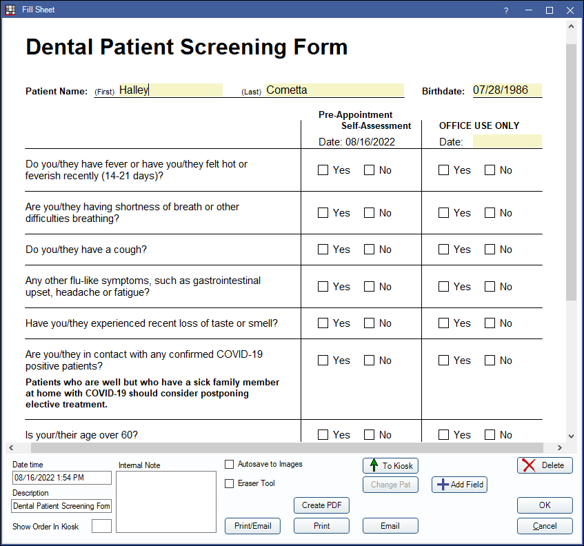

Dental Patient Screening Form
The ADA released a COVID-19 Patient Screening Form, available as a sheet in Open Dental in versions 19.4.40 and 20.1.18 and greater.
Use the internal Sheet in Open Dental to screen patients.
Using this Sheet
First, update your Open Dental to version 19.4.40 or 20.1.18 and greater.
Go to Setup, Sheets.

The Dental Patient Screening Form will list under the Internal column. Select the sheet, then click Copy to move it to the Custom column.
Double-click the Dental Patient Screening Form on the right to edit as needed. The sheet is automatically enabled for mobile layout.

For help customizing the sheet, see Edit Sheet Def or see our Youtube Playlist on Sheets.
Filling Out the Form
The patient screening form should be created as a web form, then sent to patients to be completed.
Recommended workflow:
- Go to Setup, Sheets. On the left, highlight Dental Patient Screening Form, then click Copy to move it to the Custom column. This allows the form to be used as a web form. Customize the form as needed.
- Go to Setup , Web Forms. Create a link for the screening form.
- Send the Patient Screening Form a few days prior to the appointment using one of the options noted below.
- The patient will fill out the first half of the form (Pre-Appointment Self-Assessment section).
- Staff will Retrieve the Web Form and import it into the patient chart.
- On the day of their visit, the patient will notify you they have arrived.
- Staff will complete the other half of the form (Office Use Only section) using appropriate social distancing measures.
Option 1: Add a link to your website.
- Copy the link created in Step 2 and provide this to the person who manages your website.
- Patients will submit their form through the link on your site.
- On your site, include information about how the patient should notify you when they arrive for their appointment.
Option 2: Use eReminders to email or text the patient a link to the form ahead of the appointment.
- Set up an eReminder Rule to go out a few days before the appointment.
- If emailing, change the Email Subject and Body.
- Include the link to the Patient Screening Form.
- Include information on how the patient should notify you they have arrived for their appointment.
- If texting, change the Text Message.
- Include the link to the Patient Screening Form.
- Include information on how the patient should notify you they have arrived for their appointment.
Note:- Text messaging is an additional fee. See Integrated Texting.
- Email reminders are included for customers on support.
Option 3: Text patients from the Appointment Module.
- Select the day of the upcoming appointments on your calendar.
- Right-click on an empty section of the Appointment Module and select Text Appointments for Day.
- Enter the link to the Patient Screening Form and include how the patient should notify you they have arrived for their appointment.
- The text message will go out to all patients scheduled for the selected day.
Option 4: Email patients individually.
- Create an Email Template. Include the link to the Patient Screening Form and how the patient should notify you they have arrived for their appointment.
- Send this email to each patient as they are scheduled.
Import the Sheet
It is recommended that you update to receive the Dental Patient Screening Form. If you are unable to update, you can import the sheet by right-clicking the link below and saving the XML file. Importing the file is only available in versions 18.4 and greater.
To import the sheet, in Open Dental, go to Setup, Sheets, Tools. Click Import then select the file.